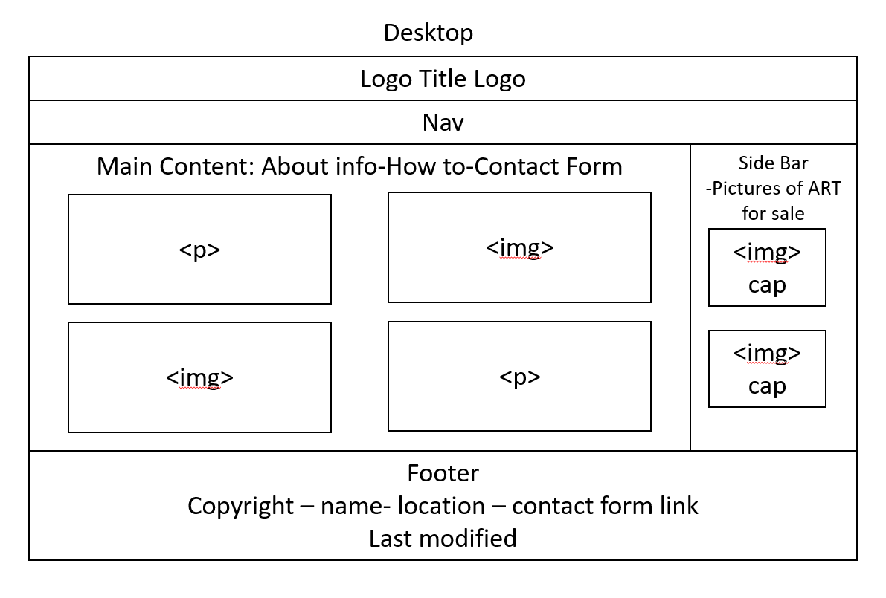
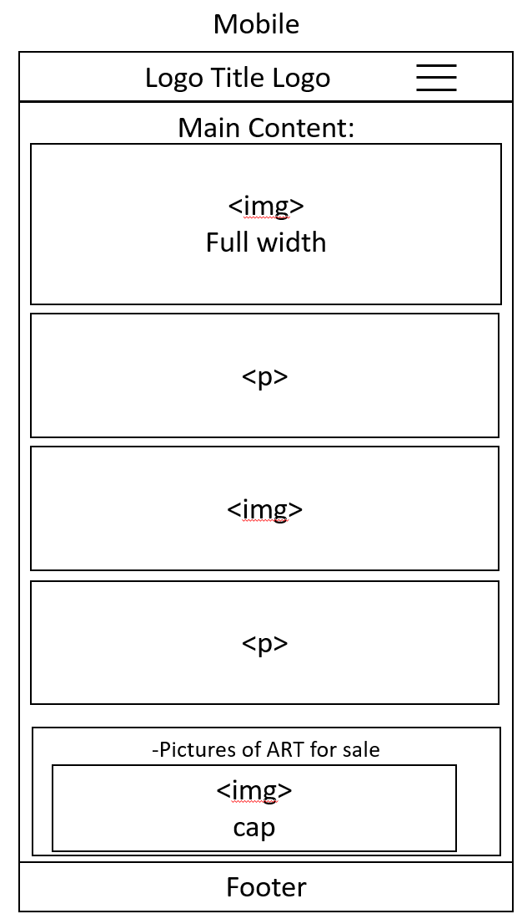

Site Purpose
The purpose of the site is to be the main website for the business. It will include information about the business and owner (about page/home page), product reviews/blog, how to guides, and a contact page.
Scenarios
Scenario A: Sees advertisement on a picture on instagram. Where do I find out how I can buy ____ art? The link from those would lead them to various pages of the site.
Scenario B: Where can I learn more about crochet or how the artist creates their art?
Color Schema
Black - Site will be various shades of Black/Grey. Page title will be dark grey (40, 40, 40). Nav will be black (rgb 0,0,0) with white text. Headings will have darker/black background such as rgb 40, 40, 40. general background will be an extremely light grey (200, 200, 200). White will be used as an accent color as needed to break up sections.
Typography
Roboto will be the main font throughout the site with larger weights for headers and titles.
Wireframes

